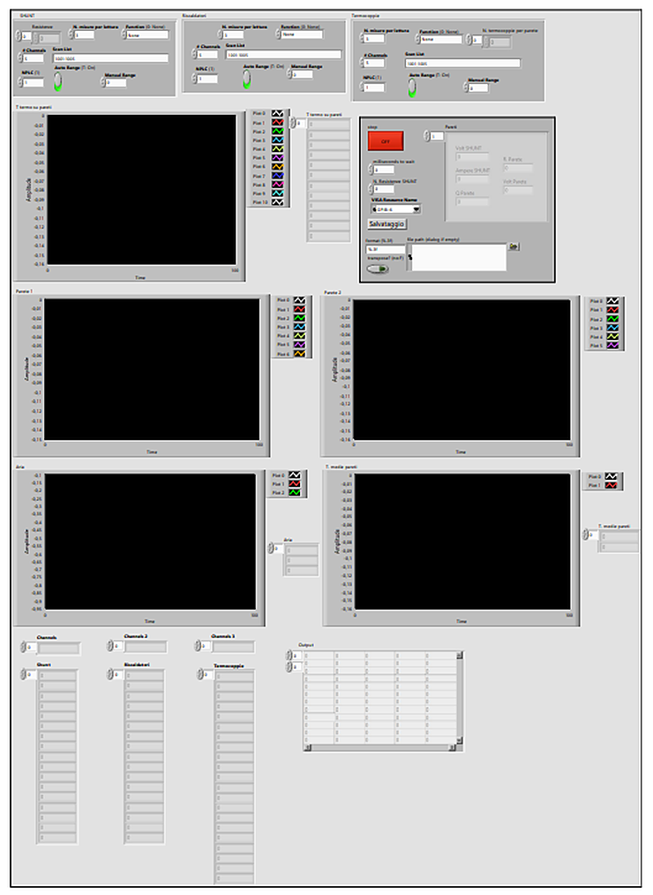
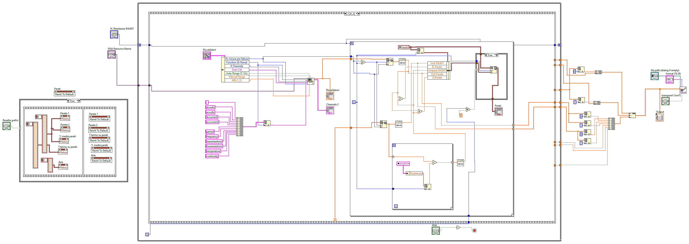

L'obiettivo
Il laboratorio aveva un sistema di acquisizione Keithley 3706 con una scheda multiplexer, ma nessun software per usarlo nelle proprie prove. Il mio compito era scrivere i programmi che lo comandano dal PC, uno per ogni esperimento, partendo da zero: comunicazione con lo strumento, configurazione dei canali, acquisizione, visualizzazione e salvataggio dei dati.

Il sistema di acquisizione
La scheda multiplexer 3721 smista i segnali degli strumenti sui canali del Keithley; ogni canale si indica con slot e numero, per esempio 1012 è il canale 12 dello slot 1. Il tempo di integrazione è impostato a 1 PLC, cioè 16,67 ms con la rete a 60 Hz: è l'intervallo in cui il rumore di misura è minimo.
Lo strumento si programma in Lua. Dal PC LabVIEW comunica con lui tramite NI-VISA, l'interfaccia che traduce i comandi in un formato che il Keithley capisce, e con la libreria di driver del 3706, che raggruppa le funzioni VISA in sottoprogrammi specifici. Per le parti che i driver non coprivano ho inviato direttamente i comandi Lua, per esempio per eseguire la scansione e leggere il buffer delle misure.
Esperimento 1: convezione naturale tra due pareti
Due pareti verticali affacciate sono riscaldate da resistenze alimentate da due generatori in corrente continua. Sulla prima parete ci sono 6 termocoppie, sulla seconda 5, più due per l'aria in ingresso e in uscita e una sulla superficie esterna. Abbiamo provato sei distanze tra le pareti, da 0,5 a 7 cm.


La potenza termica di ogni riscaldatore si calcola dalla tensione ai suoi capi e dalla corrente, che si ricava dalla caduta di tensione su uno shunt da 0,1 Ω in serie. Il programma acquisisce quindi, oltre alle termocoppie, le tensioni su shunt e riscaldatori di entrambi i circuiti.

Il programma
Il pannello del programma ha due parti. Nella configurazione si impostano i parametri di scansione di shunt, riscaldatori e termocoppie, il tempo di attesa tra le scansioni e il file di salvataggio, e si leggono in diretta corrente, resistenza e potenza di ogni parete. Nell'output ci sono i grafici delle temperature sulle pareti, delle temperature medie e dell'aria, e le tabelle con tutte le scansioni. A fine prova i dati vengono salvati su file in colonne già pronte per l'elaborazione.


Ho diviso il codice in sottoprogrammi riutilizzabili. Scan.vi configura ed esegue una scansione su una lista di canali; Termocoppia_J.vi converte la tensione della termocoppia in temperatura con il polinomio di riferimento NIST, T = Σ cᵢVⁱ. Ho scritto la stessa conversione anche per le termocoppie di tipo E, K, N, R, S e T, così i programmi si adattano ad altri sensori.

I problemi da risolvere
Le prime prove si interrompevano con errori di timeout di VISA: la lettura partiva prima che lo strumento avesse finito la scansione, oppure si aspettava un numero di byte sbagliato. Ho tarato timeout e byte da leggere e fatto leggere il buffer solo fino all'ultimo indice scritto, invece che per intero. Il Keithley gestisce al massimo 576 canali per scansione, un limite da rispettare nel costruire le liste. Per gli arresti anomali di LabVIEW ho cercato le cause anche nelle segnalazioni di altri utenti dello stesso strumento.
Prove e risultati
Per ogni distanza tra le pareti la prova ha seguito quattro fasi: riscaldamento con entrambe le pareti, salvataggio a regime, spegnimento della seconda parete, nuovo salvataggio a regime. Il programma ha registrato l'intera evoluzione delle temperature.
Dalle temperature a regime abbiamo ricavato il numero di Nusselt, che misura quanto la convezione aumenta lo scambio rispetto alla sola conduzione, al variare della distanza. Con una sola parete riscaldata lo scambio è più intenso. Con entrambe riscaldate, a distanze piccole i due flussi d'aria calda interferiscono e il Nusselt crolla, poi si stabilizza oltre i 3 cm.
Esperimento 2: convezione forzata in un condotto reticolare
Il secondo apparato è un condotto lungo 8 cm con una struttura interna reticolare, attraversato da un flusso d'aria e riscaldato da una resistenza. Le termocoppie sono sopra e sotto il condotto e misurano anche l'aria in ingresso e in uscita. Il circuito di riscaldamento è lo stesso del primo esperimento, quindi ho riusato i sottoprogrammi adattando pannello e liste di canali.


Esperimento 3: perdite di carico in un condotto
Nel terzo esperimento si misura la caduta di pressione lungo un condotto con un trasduttore differenziale Dwyer 629C03, che ha un campo di misura di 0–25 psid e un'accuratezza dello 0,5% del fondo scala. Ho scritto un sottoprogramma che converte l'uscita del trasduttore in pressione e un programma che la acquisisce insieme alle temperature dell'aria.

Cosa ho imparato
È stato il mio primo progetto in cui il software doveva funzionare su uno strumento reale, usato poi da altri. Ho imparato a leggere la documentazione di un sistema di acquisizione, a far dialogare livelli diversi, da LabVIEW a VISA ai comandi Lua dello strumento, e a scrivere codice modulare che si potesse riusare su esperimenti diversi. Gli errori di comunicazione mi hanno insegnato a cercare la causa con metodo invece di aggirarla.